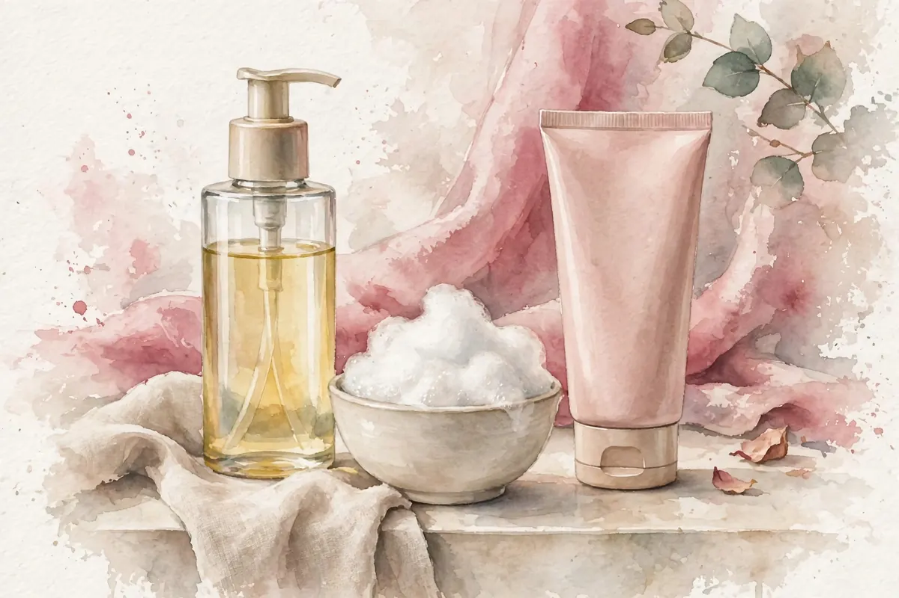
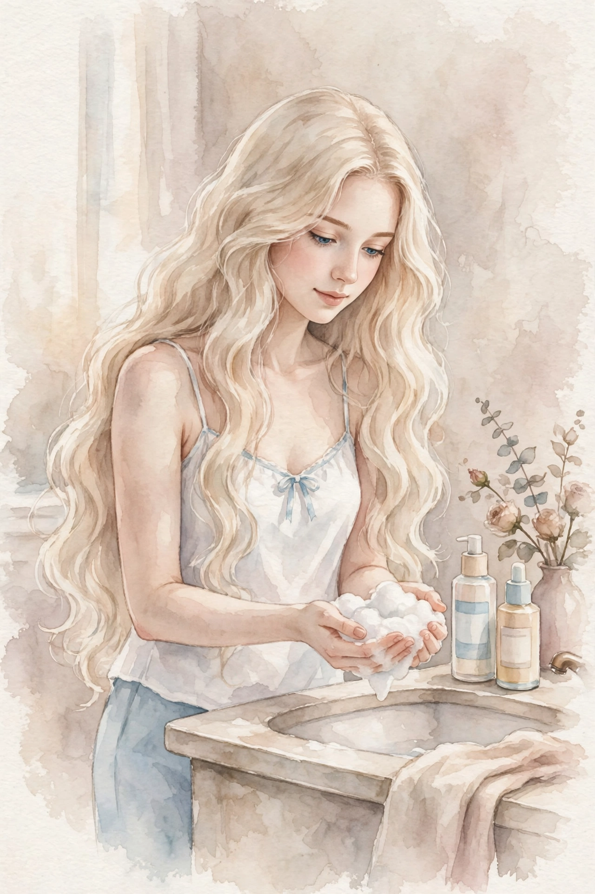

トップ ＞ スキンケア ＞ クレンジングと洗顔の役割分担の読み方
クレンジングと洗顔の役割分担の読み方

「クレンジングのあとに洗顔も必要なのか」という疑問は、洗うケアの基本の疑問です。施術前の準備でも、この二つの役割分担を意識します。この記事では、それぞれが何を落とす工程なのかという、役割の読み方を整理します。
クレンジングは「メイクなどを浮かせる」工程
クレンジングの主な役割は、メイクや日焼け止めなど、油分を含むものを浮かせて落とすことです。水だけでは流れにくい性質のものを、なじませて浮かせる。ここが洗顔との一番の違いです。メイクをした日は、この工程が洗うケアの起点になります。
商品によっては「洗顔不要」と表示され、一つの工程で済む設計のものもあります。表示はその商品の設計そのものですから、まずはパッケージの使い方を読むことが、役割分担を決める材料になります。
洗顔は「水で流せる汚れを洗う」工程
洗顔の役割は、汗や皮脂、ほこりなど、水性の汚れを洗い流すことです。クレンジングを使った日は、その残りを洗い流す役割も担います。泡で包むように洗い、すすぎを丁寧に行うことが、この工程の中心です。
朝の洗顔がこの工程だけになるのは、前夜から朝までの間に付くものが、主に汗や皮脂だからです。役割で考えると、朝と夜で洗い方が違う理由も見えてきます。
必要な日と、簡略できる日
メイクをしっかりした日、日焼け止めを重ねた日は、二つの工程を丁寧に行う日です。逆に、家で過ごした日や軽いメイクの日は、商品の設計によっては工程を簡略できる場合もあります。大切なのは「いつも二つ」でも「いつも一つ」でもなく、その日の顔に何が付いているかで判断することです。
洗いすぎの心配がある方は、工程の数より、1回ごとの丁寧さとすすぎの十分さを見直してみてください。洗ったあとにいつもと違うつっぱり感や赤みが続く場合は、使い方を見直し、気になるときは皮膚科などの専門家に相談を。
すすぎの丁寧さが、洗うケアの仕上げ
役割分担と同じくらい大切なのが、すすぎです。クレンジングも洗顔も、落としたものを水で流し切るところまでが工程です。髪の生え際、耳の前、あごの下は、すすぎ残しの多い場所として知られています。鏡で泡の残りを確認する習慣を持つと、残りやすい場所が自分の癖として見えてきます。
すすぎの水の温度は、洗顔のお湯の考え方と同じで、熱すぎないぬるま湯が基本です。工程の数を増やす前に、すすぎの質を見直す。それだけで、洗うケア全体の印象は変わります。役割分担とすすぎ、この2つが洗うケアの両輪です。
役割分担を考えるうえで、もうひとつの材料は「その日の過ごし方」です。屋外で長く過ごした日、汗をたくさんかいた日、室内で静かに過ごした日では、顔に付いているものの顔ぶれが変わります。工程の数は、商品だけでなく、その日の自分に合わせて選ぶものです。
迷ったときの基準は、落とし残しと洗いすぎの、どちらに寄っているかを見直すことです。夕方の肌の感触や、朝の状態が、その答えの手がかりになります。役割で考える習慣があれば、日ごとの調整も感覚任せではなくなります。
二つの工程を行う日は、時間の配分も意識したいところです。クレンジングになじませる時間、洗顔で泡を転がす時間、すすぎの時間。どれか一つに偏ると、全体の質が下がります。急ぐ日ほど、工程を減らすのではなく、すすぎを確保する判断が大切です。
洗顔料の泡立てが不十分なまま洗うと、手が直接肌に触れる場面が増えます。泡は、洗うための道具です。泡立ての道具の手入れまで含めて、洗うケアは一つの系として成り立っています。
役割分担の理解は、商品選びの場面でも役立ちます。「これは落とす役」「これは洗う役」と分類できれば、棚の中の重なりにも気づけます。理解が、買い物と収納の両方を整理してくれるのです。

セラフィナ「落とす役と洗う役、分けて考えると分かりやすいね。その日次第で決めよう」